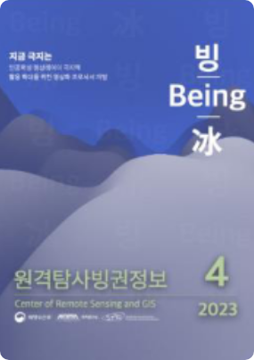

STAR소개
인사말
연구사업
조직안내
찾아오시는 길
STAR소식
남북극 해빙정보
과학기지현황
극지소식
보도자료
논문성과
사진첩
원격탐사
해색 원격탐사
광학 원격탐사
마이크로파 원격탐사
무인기 원격탐사
극지관측
STAR 시스템
무인기
현장관측장비
관련사이트
사업단
관련기관
QUICK LINK
극지연구소
한국해양과학기술원
해양수산부

극지소식
원격탐사빙원정보 4월호
지난회차 보러가기